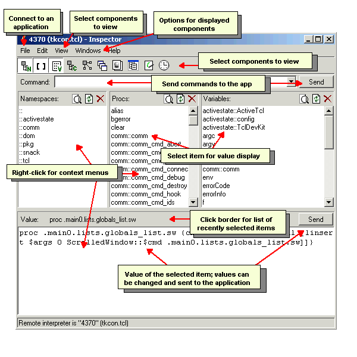

The Tcl Dev Kit Inspector analyzes a running Tcl or Tk application and provides an interface for viewing the program's components. It is based on Tkinspect, a Tk program browser originally written by Sam Shen at LBL. When you attach to a running application via a comm port, or via Tk's send command, components within the application are organized and displayed according to the component type.
The Value Window displays the configuration of a component; click a specific component in a list to display its value. The configuration of a component can be changed in the Value window, and the change sent to the running application by clicking the Send button.
Tcl commands can be sent to the attached application using the Command field.
Invoke the Inspector by selecting Tcl Dev Kit Inspector from the Tcl Dev Kit program group on the Windows Start menu.
Alternatively, you can launch the Inspector from the command
line. On Windows systems, enter tclinspector.exe at the command
prompt. On Unix systems, enter tclinspector at the shell prompt.
To invoke a new Inspector session, or to close an existing session, use the options on the File menu. If the Inspector session was invoked from another Inspector session (via the File | New Window option), the Close Window option will only close the spawned window. The Exit option will close all Inspector sessions.
The Inspector can interface with Tcl and Tk applications
loaded via tkcon or via a Tcl or Wish shell. For example, to
load an application via tkcon, load the desired application in
tkcon, then enter the following commands:
source application_name
package require comm
comm::comm self
The last command will return the port number on which the program is running.
From the File menu in the Inspector,
select Connect to comm port, and enter the port number
reported by tkcon.
The Inspector can be connected to multiple ports at
once. To display the ports to which the Inspector is connected,
or to select an alternative port for display, select File | Attach to
Interp (comm). Connections will be displayed by the port number and the
method by which the application is loaded. For example, if tkcon
reported that the application was running on port 2824, the
Attach to Interp (comm) menu option would display an entry
reading "2824 (tkcon.tcl)".
In addition to any manual connections, the Inspector is always connected to itself; the Inspector connection is described as "self" in the Attach to Interp (comm) menu.
Attaching via send (File | Attach to Interp
(send) makes use of the Unix X-based mechanism.
It is supported by the Inspector, but because of inherent
security issues (described in the send manpage), the
comm method described above is the preferred connection method.
The Inspector interface consists of the following components:
To disable (or re-enable) the pop-up tooltips that describe components of the interface, select Help | Show Tooltips.
To change the font size displayed in the Inspector, press
Ctrl-plus to increase the font size or Ctrl-minus to
decrease the displayed font size. If using Windows with a mouse wheel, you can
alternatively press the Ctrl key and then rotate the mouse wheel to
increase or decrease the font size displayed in the Inspector.
"Lists" are program components grouped by component type. They are displayed in columns beneath the menu bar. By default, the Namespaces, Procs and Globals lists are displayed when the Inspector is invoked. Use the View menu to enable or disable the display of individual lists.
Items are analyzed recursively. Items in packages referenced in the original application will be included.
The following list types are available:
namespace command.procs command.global command.image command.menu command.canvas command.after command.When a list is selected for display, an entry will be added to the Windows menu that contains options for the list. The menu contains a set of standard operations, followed by list-specific operations (if any are available). The operations menu can also be accessed by right-clicking within the list. Standard list operations include:
Operations that are specific to the list type are described in the pertinent sections below. For example, the Globals list has an additional option called "Trace Variable" that is described in the Globals section below.
TopThe Namespaces List contains a list of the namespaces
defined in the application via the namespace command. This list
has no list-specific operations. There is no default filter on the list.
The Procs List contains a list of procedures defined in
the application via the proc command. This list has no
list-specific operations. The default filter on the list is configured to
exclude the following patterns:
^auto_.*
^tk[A-Z].*
Top
The Globals List contains a list of the global variables
defined in the application via the global command. This list
has one list-specific operation: Trace Variable
creates a new toplevel window that will display "set" statements
that write to the variable. (The trace window will display the last 50
"set" statements.) Trace Variable handles both
scalars and arrays.
For an interesting example of how this works, try the following:
tk::Priv.A trace window will be displayed that tracks the tk::Priv array.
The default filter on the list is configured to exclude the following patterns:
^auto_.*
^tkPriv.*
^tk_.*
Top
The Classes List contains a list of the
[incr Tcl] classes defined in the application. The
Inspector uses the [incr Tcl]
info command to reconstruct the class definition, showing
the member variable definitions and the class method code. This list
has no list-specific operations. There is no default filter on the list.
The Objects List contains a list of the
[incr Tcl] objects defined in the application. The
Inspector uses the [incr Tcl]
info command to reconstruct the class definition, showing
the member variable definitions and the class method code. This list
has no list-specific operations. There is no default filter on the list.
The Windows List contains a list of the items in the application that generate a GUI component, such as menus, buttons, etc. There is no default filter on the list.
The Windows List is the Inspector's most complicated list. In addition to the standard list operations, the Windows menu contains a group of options that determine the type of information that is displayed in the Value window. The options are exclusive; that is, only one option can be selected at a time. The options include:
pack and / or
grid settings for the window.pack
and / or grid settings for slaves of the window.The following options avoid common pitfalls in sending back window values. All of these options can be enabled at the same time.
-class options from values that are displayed. Setting the
window class of frame and toplevel after they've
been created is an error. Enabled by default.-in options from values that are displayed. Enabled by
default.The following option controls how windows are retrieved:
The default filter on the list is configured to exclude the pattern
^\.#.*.
The Images List contains a list of the images defined in
the application via Tk's image command. The list has one
list-specific operation: Display Image sends a command to the
application to create a new toplevel window containing the selected image.
There is no default filter on the list.
The Menus List contains a list of the menus defined in
the application via Tk's menu command. This list has no
list-specific operations. There is no default filter on the list.
The Canvases List contains a list of the canvases defined
in the application via Tk's canvas command. This list has no
list-specific operations. There is no default filter on the list.
The Afters List contains a list of the items defined in
the application via the after command. This list has no
list-specific operations. There is no default filter on the list.
The Value Window is an editable Tk text window that displays details of the most-recently selected item from a list. Configuration items can be changed and sent back to the application by clicking the Send button.
The most recent 15 items that were selected from the lists can be displayed by clicking in the area above the Value window. Select an item from the list to re-display the value.
The Value menu item in the main menu bar contains a number of options. These options can also be displayed by right-clicking in the Value window:
The following shortcut key strokes are supported: